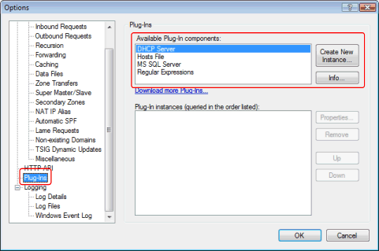
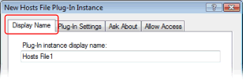
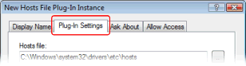
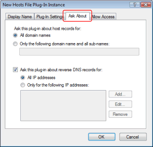
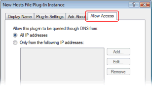

Simple DNS Plus has a plug-in system for providing additional services (such as DHCP) and for fetching DNS data from various sources such as databases and custom programs and scripts.
A list of available plug-ins is available at https://simpledns.plus/plugins.
Plug-ins user interface
Plug-ins are instantiated from the Options dialog / Plug-In section:

The plug-in instance dialog has the following tabs; A "Display Name" tab:

A "Plug-in Settings" tab (this tab is not available for plug-in types which do not have any unique settings):
An "Ask About" tab where it is possible to limit which requests are handed to the plug-in.
(This tab is not available for plug-ins which supply this data through other settings)
By default all requests are handed to the plug-in, but if the plug-in does a lot of work for each request (such as database lookups) it might by a good idea to limit this to specific domains, IP ranges, and/or record types to optimize performance.

An "Allow Access" tab where it is possible to limit which requests are handed to the plug-in based on client IP address:

Some plug-ins will have their own "View" - a dockable sub-window of the Simple DNS Plus main window:

Why plug-ins?
Users often ask us to implement different new features in Simple DNS Plus, and we are always very happy to get these suggestions.
However some of the suggested features are things that only a smaller group of users would be interested in, and while it might be a really cool feature for those users, it might be a distraction to others.
Of course adding a new feature also makes the software more complex and gives it a larger "attack surface".
So for version 5.0 we decided to implement a plug-in system, allowing us (and 3rd parties) to develop new features without cluttering the base product, and allowing users to select which of these features they want - or don't want.
Some of the befits of this model are:
- Simpler user interface; settings for un-used plug-ins are not in the way.
- Allows us to implement new features without touching the core DNS server code.
- Less memory usage; only selected plug-in modules are loaded into memory.
- Smaller attack surface; evil doers can't attack plug-ins that aren't loaded.
- Great for asynchronous lookups; a plug-in lookup can run in a separate thread not holding up other DNS requests.
- Allows users and 3rd parties to develop their own plug-ins (see this article)
- Allows separate distribution of selected plug-in modules and required libraries (reducing size of main installer).
Open Architecture
The plug-in architecture is open for users and 3rd parties interested in developing their own plug-ins. Please see this article for details.